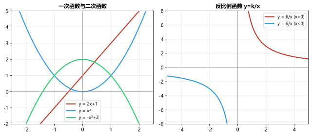
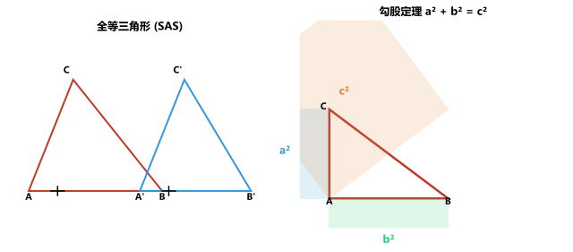

专题一：有理数混合运算
数与式有理数运算顺序：先乘方 → 再乘除 → 最后加减，有括号先算小括号→中括号→大括号。注意符号：负数的奇次幂为负、偶次幂为正；绝对值非负。运算律：交换律 a+b=b+a, ab=ba；结合律 (a+b)+c=a+(b+c)；分配律 a(b+c)=ab+ac。
例：计算：(-2)² - (-3)³ × (-1)²⁰²⁶ + | -5 |
解：4 - (-27)×1 + 5 = 4 + 27 + 5 = 36
例：计算：-1⁴ - ¼ × [2 - (-3)²]
解：-1 - ¼ × (2-9) = -1 - ¼×(-7) = -1 + 7/4 = 3/4
• (-3)² × (-¹/₃) + 4 ÷ (-2) 答案：-5
• | -8 | ÷ 2² - (-2)³ 答案：10
• -2² + √9 - (-1)³ 答案：0
专题二：实数与根式运算
数与式实数分类：有理数（整数、分数）和无理数（无限不循环小数）。平方根：√a²=|a|。立方根：³√a³=a。二次根式：√a·√b=√ab，√a/√b=√(a/b)(a≥0,b>0)。分母有理化：1/√a=√a/a。常见无理数：π、√2≈1.414、√3≈1.732、√5≈2.236。
例：计算：√12 + √27 - √48
解：2√3 + 3√3 - 4√3 = √3
例：化简：(√5+2)(√5-2) + (√3-1)²
解：(5-4) + (3-2√3+1) = 1 + 4 - 2√3 = 5-2√3
• √8 × √2 - √18/√2 答案：4-3=1
• (√6-√2)² 答案：8-4√3
• 比较大小：√5-1 __ 1（填>/答案：>（√5-1≈1.236>1）
专题三：整式运算与因式分解
数与式幂的运算：a^m·a^n=a^(m+n)；a^m÷a^n=a^(m-n)；(a^m)^n=a^(mn)；(ab)^n=a^n·b^n。乘法公式：(a+b)(a-b)=a²-b²；(a±b)²=a²±2ab+b²。因式分解：提公因式法→公式法→十字相乘法。十字相乘法：x²+(p+q)x+pq=(x+p)(x+q)。
例：计算：(2x-3y)² - (x+2y)(x-2y)
解：(4x²-12xy+9y²) - (x²-4y²) = 3x²-12xy+13y²
例：因式分解：x³-4x 和 x²-5x+6
解：x³-4x = x(x²-4) = x(x+2)(x-2)。x²-5x+6 = (x-2)(x-3)
• (a+2b)²-(a-2b)² 答案：8ab
• 因式分解：2x²-8 答案：2(x+2)(x-2)
• 因式分解：x²+6x+9 答案：(x+3)²
专题四：分式运算
数与式分式有意义的条件：分母≠0。分式的值为0：分子=0且分母≠0。分式基本性质：分子分母同乘（除）一个不为0的整式，分式值不变。约分：将分子分母的公因式约去。通分：各分式化为同分母。分式加减：同分母分母不变分子相加减，异分母先通分。分式乘除：除以一个分式等于乘以它的倒数。
例：化简：(x²-1)/(x²-2x+1)
解：= (x+1)(x-1)/(x-1)² = (x+1)/(x-1) (x≠1)
例：计算：1/(x-1) - 2/(x²-1)
解：= (x+1)/(x²-1) - 2/(x²-1) = (x-1)/(x²-1) = 1/(x+1)
• (a²-4)/(a²-4a+4) 化简 答案：(a+2)/(a-2)
• 2/(x-1) + 3/(x+1) 合并 答案：(5x-1)/(x²-1)
专题五：一元一次方程与方程组
方程一元一次方程：ax=b（a≠0）→ x=b/a。步骤：去分母→去括号→移项→合并同类项→系数化1。二元一次方程组：代入消元法（将一个方程变形代入另一个）或加减消元法（将两个方程相加或相减消去一个未知数）。列方程解应用题步骤：审题→设未知数→找等量关系→列方程→求解→检验→作答。
例：解方程：(2x-1)/3 - (x+2)/4 = 1
解：两边×12：4(2x-1)-3(x+2)=12 → 8x-4-3x-6=12 → 5x=22 → x=22/5
例：解方程组：{2x+y=7, x-3y=-2}
解：由②得x=3y-2，代入①：2(3y-2)+y=7 → 6y-4+y=7 → y=11/7 → x=3×11/7-2=19/7
• 5x-3=2x+9 答案：x=4
• {x-y=1, 2x+y=8} 答案：x=3,y=2
• 一个数的一半减3等于这个数的¼加1，求这个数 答案：16
专题六：一元二次方程
方程一元二次方程：ax²+bx+c=0（a≠0）。解法：①直接开平方 ②配方法 ③公式法 ④因式分解法。判别式：Δ=b²-4ac。Δ>0两个不等实根，Δ=0两个相等实根，Δ<0无实根。求根公式：x=[-b±√(b²-4ac)]/(2a)。韦达定理：x₁+x₂=-b/a，x₁·x₂=c/a。
例：解方程：x²-6x+8=0
解：因式分解：(x-2)(x-4)=0 → x=2或x=4。或用公式：Δ=36-32=4，x=(6±2)/2 → x₁=4,x₂=2
例：关于x的方程 x²-2x+m=0 有实根，求m的取值范围
解：Δ=4-4m≥0 → m≤1。当m=1时有两个相等实根，m<1时两个不等实根
• x²+4x-5=0 答案：x=1或x=-5
• 2x²-5x+2=0 答案：x=2或x=½
• 已知方程一根为2，求另一根和m：x²+mx-6=0 答案：另一根-3，m=1
专题七：分式方程与不等式(组)
方程与不等式分式方程：分母含未知数的方程。解法：去分母（两边同乘最简公分母）→化为整式方程→求解→检验是否增根。增根使分母为零。不等式：注意乘除负数要变号。不等式组：同大取大，同小取小，大小小大中间找，大大小小找不到。
例：解分式方程：2/(x-1) = 3/(x+1)
解：两边×(x-1)(x+1)：2(x+1)=3(x-1)→2x+2=3x-3→x=5。检验：代入分母≠0，∴x=5是原方程的解
例：解不等式组：{2x-1>3, x+2≤4x-1}
解：① 2x>4 → x>2。② x-4x≤-1-2 → -3x≤-3 → x≥1。解集：x>2
• 3/(x-2) = 5/x 答案：x=5
• {3x-1>2, 2x+1≤7} 答案：1
• 某数x的2倍加3大于x的3倍减1，求x范围 答案：x<4
专题八：一次函数
函数一次函数：y=kx+b（k≠0）。k>0时y随x增大而增大（过一三象限），k<0时y随x增大而减小（过二四象限）。b是纵截距。图像与坐标轴交点：与y轴交点(0,b)，与x轴交点(-b/k,0)。待定系数法：两点确定一条直线。一次函数与方程(组)：解方程kx+b=0 ↔ 直线与x轴交点；解方程组 ↔ 两直线交点。

一次函数 y=2x+1（左）、二次函数与反比例函数（右）
例：已知一次函数图像过(1,3)和(-2,-3)，求解析式
解：{k+b=3, -2k+b=-3} → 3k=6→k=2, b=1。解析式 y=2x+1
例：直线 y=-2x+4 与坐标轴围成的三角形面积
解：x轴交点(2,0)，y轴交点(0,4)，面积=½×2×4=4
• 一次函数过(-1,2)和(2,5)，求解析式 答案：y=x+3
• 直线y=2x-3与x=1,y=-1围成的区域面积 答案：2
专题九：反比例函数
函数反比例函数：y=k/x（k≠0）。k>0图像在一三象限，每个象限内y随x增大而减小；k<0在二四象限，每个象限内y随x增大而增大。图像是双曲线，无限接近坐标轴但不相交。|k|的几何意义：过双曲线上任一点作两坐标轴的垂线，与坐标轴围成的矩形面积=|k|。
例：反比例函数过点(2,6)，求k及x=-3时的y值
解：k=2×6=12。当x=-3时，y=12/(-3)=-4
例：一次函数 y=2x+1 与反比例函数 y=6/x 的交点坐标
解：2x+1=6/x → 2x²+x-6=0 → (2x-3)(x+2)=0 → x=3/2或x=-2。交点(1.5,4)和(-2,-3)
• 反比例函数 y=(m-1)/x 在二四象限，求m范围 答案：m<1
• 双曲线上一点向xy轴作垂线，矩形面积4，求k 答案：k=±4
专题十：二次函数
函数二次函数：y=ax²+bx+c（a≠0）。顶点坐标：(-b/2a, (4ac-b²)/4a)。对称轴：x=-b/2a。a>0开口向上（有最小值），a<0开口向下（有最大值）。与x轴交点：Δ>0两个交点，Δ=0一个切点，Δ<0无交点。三种形式：一般式y=ax²+bx+c、顶点式y=a(x-h)²+k、交点式y=a(x-x₁)(x-x₂)。
例：求二次函数 y=x²-4x+3 的顶点、对称轴和x轴交点
解：顶点：(2,-1)，对称轴x=2。x²-4x+3=0→(x-1)(x-3)=0→交点(1,0)(3,0)
例：二次函数 y=-x²+2x+3 的最大值和图像开口方向
解：a=-1<0开口向下。对称轴x=1，最大值 f(1)=-1+2+3=4
• y=x²+2x-3 的顶点和与y轴交点 答案：顶点(-1,-4)，y轴(0,-3)
• 函数 y=-2x²+4x+1 的最大值 答案：x=1时max=3
专题十一：全等三角形与相似三角形
几何全等：△ABC≅△DEF。判定：SSS(三边)、SAS(两边夹角)、ASA(两角夹边)、AAS(两角一对边)、HL(直角三角形的斜边直角边)。全等→对应边相等、对应角相等。相似：△ABC∼△DEF。判定：AA(两角相等)、SAS(两边成比例且夹角相等)、SSS(三边成比例)。相似比→周长比=相似比，面积比=相似比的平方。

全等三角形 SAS 判定（左）与勾股定理（右）
例：已知AB=DE，∠A=∠D，AC=DF，求证△ABC≅△DEF
解：AB=DE（已知），∠A=∠D（已知），AC=DF（已知）→ SAS全等
例：△ABC中DE∥BC，AD=2，DB=3，AE=3，求EC
解：DE∥BC→△ADE∼△ABC→AD/AB=AE/AC → 2/5=3/(3+EC) → 2(3+EC)=15 → EC=4.5
• 直角三角形全等的特殊判定条件 答案：HL（斜边+直角边）
• 相似三角形面积比=相似比的____ 答案：平方
专题十二：勾股定理与解直角三角形
几何勾股定理：直角三角形中，a²+b²=c²（c为斜边）。勾股数：3-4-5、5-12-13、8-15-17、7-24-25。锐角三角函数：sinA=对边/斜边，cosA=邻边/斜边，tanA=对边/邻边。特殊角：30°→sin=½,cos=√3/2,tan=√3/3；45°→sin=cos=√2/2,tan=1；60°→sin=√3/2,cos=½,tan=√3。
例：Rt△ABC中∠C=90°，a=6，b=8，求斜边c及斜边上的高
解：c=√(a²+b²)=√(36+64)=10。S=½ab=½ch → h=ab/c=4.8
例：Rt△ABC中∠A=30°，BC=5（∠C=90°），求AB和AC
解：∠A=30°→BC=½AB → AB=10。AC=AB·cos30°=10×√3/2=5√3
• 等腰三角形底角30°，腰长10，求底边 答案：10√3
• Rt△中∠A=60°，AB=8，求BC 答案：BC=8×sin60°=4√3
专题十三：四边形
几何平行四边形：对边平行且相等，对角相等，对角线互相平分。矩形：对角线相等且互相平分，四个角90°。菱形：四边相等，对角线垂直平分且平分对角，面积=½d₁d₂。正方形：四边相等四角90°，对角线相等垂直平分。梯形：一组对边平行，中位线=(a+b)/2。n边形内角和：(n-2)×180°，外角和=360°。
例：平行四边形ABCD中∠A=60°，求其他三个角的度数
解：对角相等：∠C=∠A=60°。邻角互补：∠B=∠D=180°-60°=120°
例：菱形对角线长6和8，求边长和面积
解：边长=√(3²+4²)=5。面积=½d₁d₂=½×6×8=24
• 矩形对角线夹角60°，较短边长5，求对角线长 答案：10
• 梯形上底3下底7，求中位线 答案：5
专题十四：圆
几何圆的性质：垂径定理（垂直于弦的直径平分弦），同弧所对圆周角是圆心角的一半。直径所对圆周角=90°。切线：过切点半径⊥切线，切线长定理。圆幂定理：相交弦定理、切割线定理。圆中计算：弧长l=nπr/180，扇形面积S=nπr²/360=½lr。

圆心角与圆周角关系：α=2β
例：圆O半径5，弦AB=6，求圆心到AB的距离
解：作OC⊥AB→AC=3。OC=√(OA²-AC²)=√(25-9)=4
例：圆的直径AB=10，C在圆上且AC=6，求BC
解：直径所对圆周角∠ACB=90°→BC=√(AB²-AC²)=√(100-36)=8
• 圆半径6，60°圆心角所对弧长 答案：2π
• 扇形半径8cm，面积32πcm²，求圆心角 答案：180°
专题十五：统计与概率
统计概率统计量：平均数、中位数（中间的数）、众数（出现最多的数）。方差：S²=¼[(x₁-¯x)²+...+(xₙ-¯x)²]，方差越大波动越大。概率：P(A)=n(A)/n(总)，0≤P≤1。必然事件P=1，不可能事件P=0。树状图/列表法求两步以上事件的概率。频率估计概率：试验次数足够大时频率稳定于概率。

掷硬币两次的概率树状图
例：一个袋中有2个红球和3个白球（除颜色外相同），随机摸出1球后放回再摸1次，求两次都摸到红球的概率
解：P=²/₅ײ/₅=⁴/₂₅
例：数据2,3,5,5,6,8的中位数、众数和平均数
解：排序：2,3,5,5,6,8。中位数=(5+5)/2=5。众数=5。平均数=(2+3+5+5+6+8)/6=29/6≈4.83
• 一组数据方差为4，每个数据加2后方差变吗 答案：不变（方差不受加减影响）
• 掷骰子一次，点数大于4的概率 答案：2/6=1/3